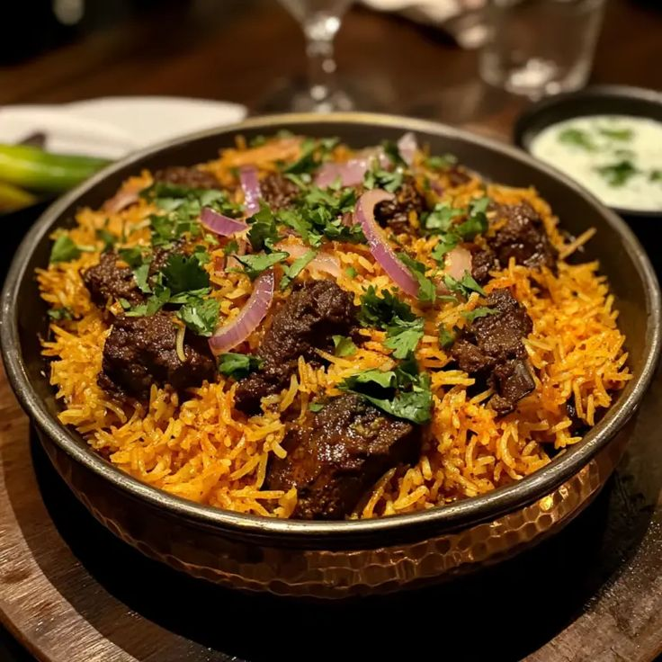
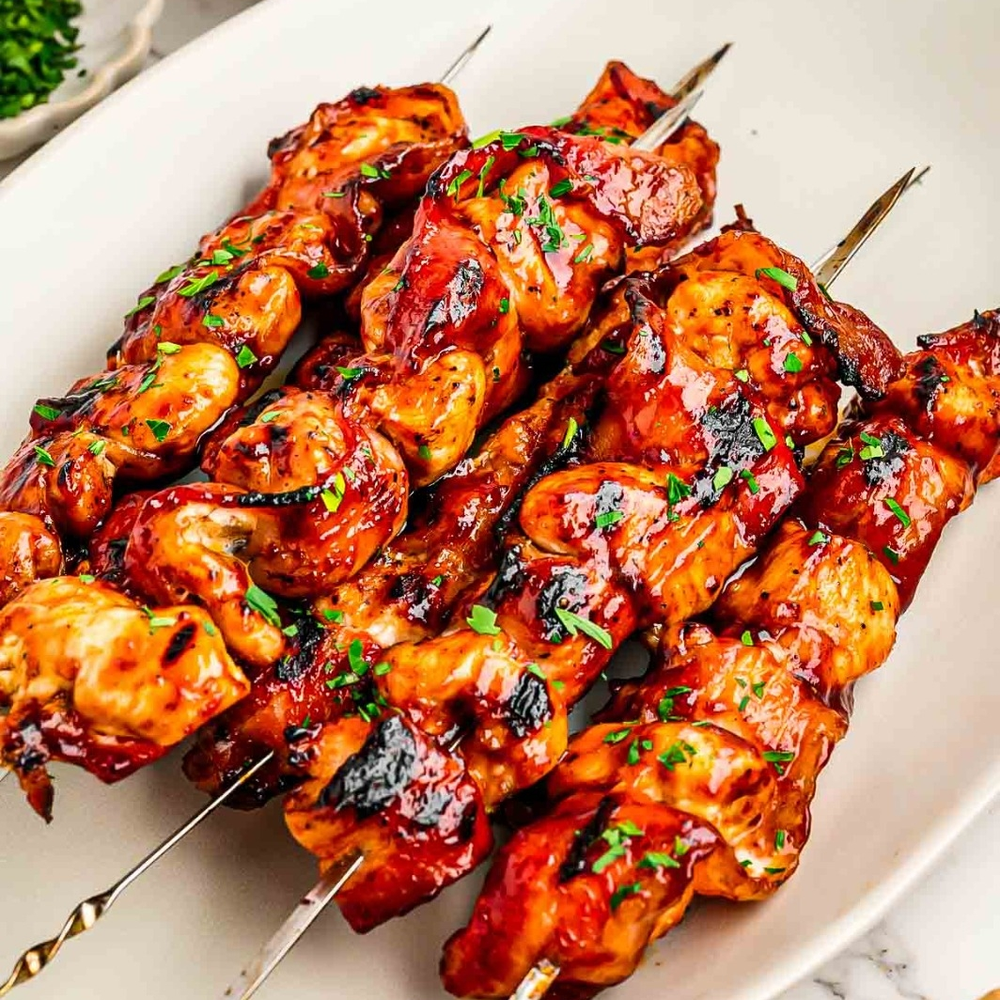
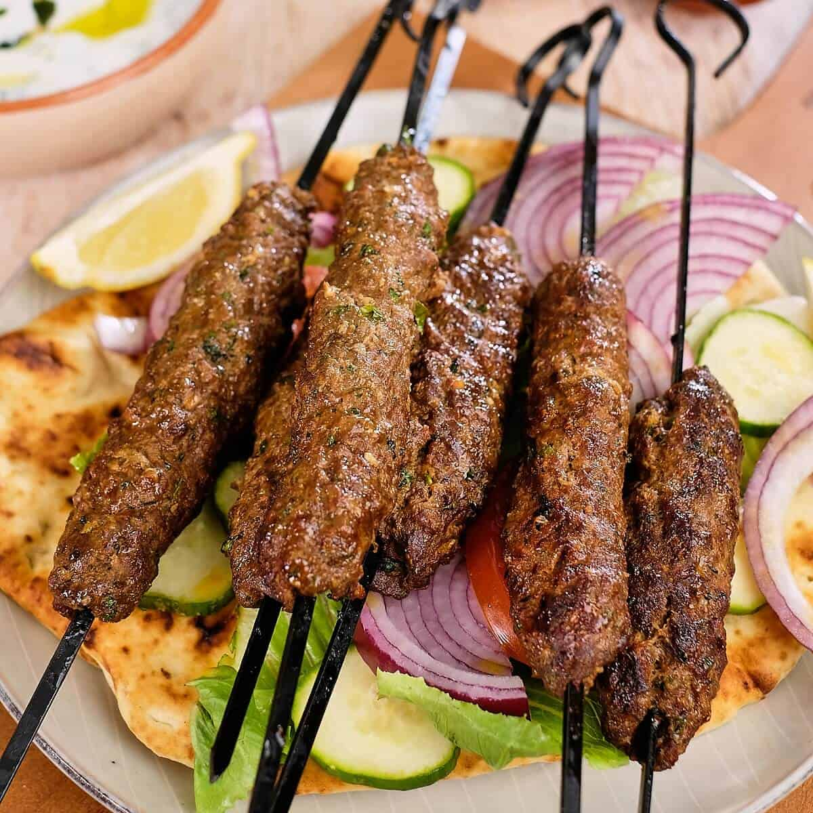

Biryani
Spicy and delicious rice dish made with meat and spices.
Ingredients
- Beef or Mutton
- Basmati Chawal
- Brown Onions
- Kharray Masale & Biryani Masala
- yogart

BBQ
Grilled meat full of smoky and spicy flavor.
Ingredients
- Beef or Mutton
- Kacha Papita
- Adrak-Lehsan Paste
- BBQ Masala
- yogart

Nihari
Traditional slow-cooked meat curry loved on Eid.
Ingredients
- Beef Shank
- Nihari Masala
- Aata
- Desi Ghee
- Garnish

kababs
Soft and juicy kebabs served with naan and chutney.
Ingredients
- Keema
- Kacha Papita
- Pyaz aur Hari Mirch
- Besan
- Kabab Masala
| Recipe | Cooking time |
|---|---|
| Biryani | 1 hour |
| BBQ | 50 minutes |
| Nihari | 3 hour |
| kababs | 50 minutes |